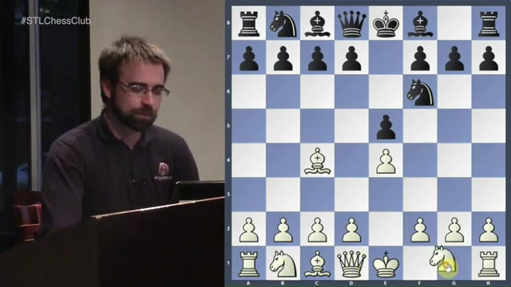
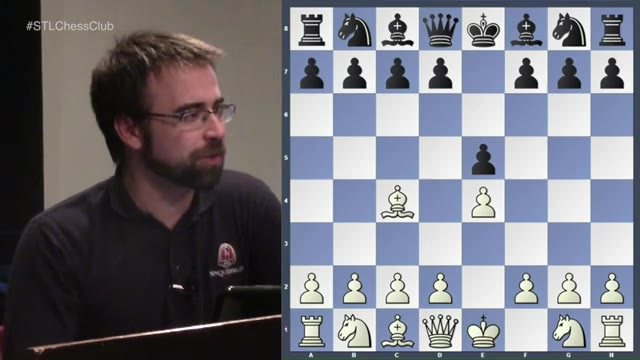
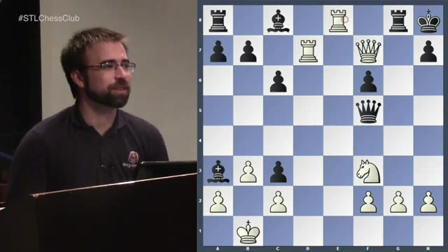

A deep dive into the Urusov Gambit — an underrated 1.e4 e5 2.Bc4 d4 weapon that surprises opponents and gives White crushing attacking chances. Aaron walks through the theory, three historical games, and why Black's best defense often isn't accepting the gambit at all.
Watch on YouTubeThe Bishop's Opening (1.e4 e5 2.Bc4) is surprisingly obscure — even less popular than the King's Gambit. But its real punch comes after 3.d4, the Urusov Gambit. White offers a pawn on d4 with the idea that Black will feel compelled to take, walking straight into a prepared attack.
Aaron notes this is Michael Clurman's "secret weapon" — he plays the Bishop's Opening so often that opponents blunder into the d4 gambit without even realizing what's happened. The audience reactions confirm: most players shake their heads at the position after accepting.

After 3...exd4, White doesn't play the obvious Nf3. Instead, the main plan is a piece sacrifice on f7 followed by queen invasion — classic King's Gambit DNA. The tactical theme: if Black plays carelessly, Bxf7+ picks up the knight and strips the king's castling rights.
Aaron poses a puzzle to the class: after the bishop takes on f7, what's White's best follow-up? The answer — Bxf7+, not Qd5 — wins a piece while keeping the attack alive.
You've got a huge lead in development but Black is up a pawn. The challenge: can you prove the attack works, or is Black just going to be up a pawn?— Aaron
Most players won't accept the gambit — they'll play …Nc6 instead, transposing to the Scotch Gambit. Aaron emphasizes the critical theoretical line: …c6 followed by …d5, which at first glance looks slow but is actually the most testing response.
After the position clears, White's pieces are ideally placed: the bishop on c5, queen on h4, knight on c3. Black's best is to liquidate some material and hope for equality — but engines consistently favor White.

Aaron reviews a 1909 game between Nikolay Seitz and an unnamed opponent. Black accepts the gambit and tries the c6+d5 plan, but after a subtle Rxe1 pin, the position becomes razor-sharp.
White must find the difficult move Bxd5 (not Nxd5) to secure an advantage. Black's only saving grace — Kf8, threatening g6 to trap the queen — is a move Aaron calls "possibly harder to find" than White's own best replies. In the game, Black simply blundered and resigned after a cascade of exchanges.
Stockfish prefers the crazy move G4 — threatening Bf5. Whatever Black plays, the follow-up works.— Aaron
Two more games drive home the point. In a 1950 encounter, White's G4 surprise tactic — threatening Bf5 — unravels Black's kingside in devastating fashion. The Ne6 knight jump is described as an "instant killer."
The pièce de résistance is a 2001 game between Boris Sakaev and Alexandra Kosteniuk at Linares. After a complex middlegame where even engines initially mis-evaluated the position, White finds Qxf7 with crushing threats. Black resigned after the forced mate sequence.
